Титов Алексей Валерьевич, ИУ3-31М, tav18u926@student.bmstu.ru
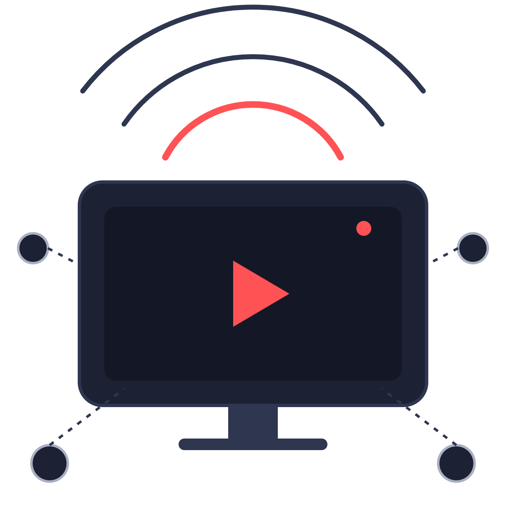
СЕЙЧАС В ЭФИРЕ
Онлайн-
трансляции
Появление, особенности, современные тенденции
Титов Алексей, ИУ3-31М
МГТУ им. Н. Э. Баумана
LIVE
МУЛЬТИМЕДИА ТЕХНОЛОГИИ · ИУ3
128
·
00:00
Начало эфира
ДАЛЕЕ: О чём пойдёт речь
Титов Алексей Валерьевич, ИУ3-31М, tav18u926@student.bmstu.ru
ПЛАН ДОКЛАДА
О чём пойдёт речь
01
Определение
Что такое онлайн-трансляция и чем она отличается от ТВ и видео по запросу
02
Телевидение
Как появилась модель «прямого эфира» задолго до интернета
03
Первые трансляции
1993 год, сеть Mbone, RealAudio и эпоха Flash
04
YouTube и Twitch
Как запускались платформы и что стало переломным моментом
05
Технология
Конвейер трансляции, протоколы, кодеки, фреймворки
06
Тенденции
Низкая задержка, Media over QUIC, AV1, ИИ
LIVE
МУЛЬТИМЕДИА ТЕХНОЛОГИИ · ИУ3
214
·
00:28
Введение
ДАЛЕЕ: Что такое онлайн-трансляция
Титов Алексей Валерьевич, ИУ3-31М, tav18u926@student.bmstu.ru
ОПРЕДЕЛЕНИЕ
Что такое онлайн-трансляция
Онлайн-трансляция (live streaming) — передача аудио и видео по IP-сети одновременно с событием: зритель смотрит контент, пока тот ещё создаётся.
Эфирное ТВ
Один сигнал для всех по радиоканалу или кабелю. Сетка вещания задана заранее, обратной связи нет.
Видео по запросу (VOD)
Записанный файл: можно перемотать, поставить на паузу, смотреть когда угодно. Задержка не важна.
Онлайн-трансляция
Поток «здесь и сейчас»: важна задержка, есть чат и реакции, транслировать может любой.
LIVE
МУЛЬТИМЕДИА ТЕХНОЛОГИИ · ИУ3
287
·
01:07
Введение
ДАЛЕЕ: Телевидение: как появился прямой эфир
Титов Алексей Валерьевич, ИУ3-31М, tav18u926@student.bmstu.ru
ПРЕДЫСТОРИЯ
Телевидение: как появился прямой эфир
1925–1926
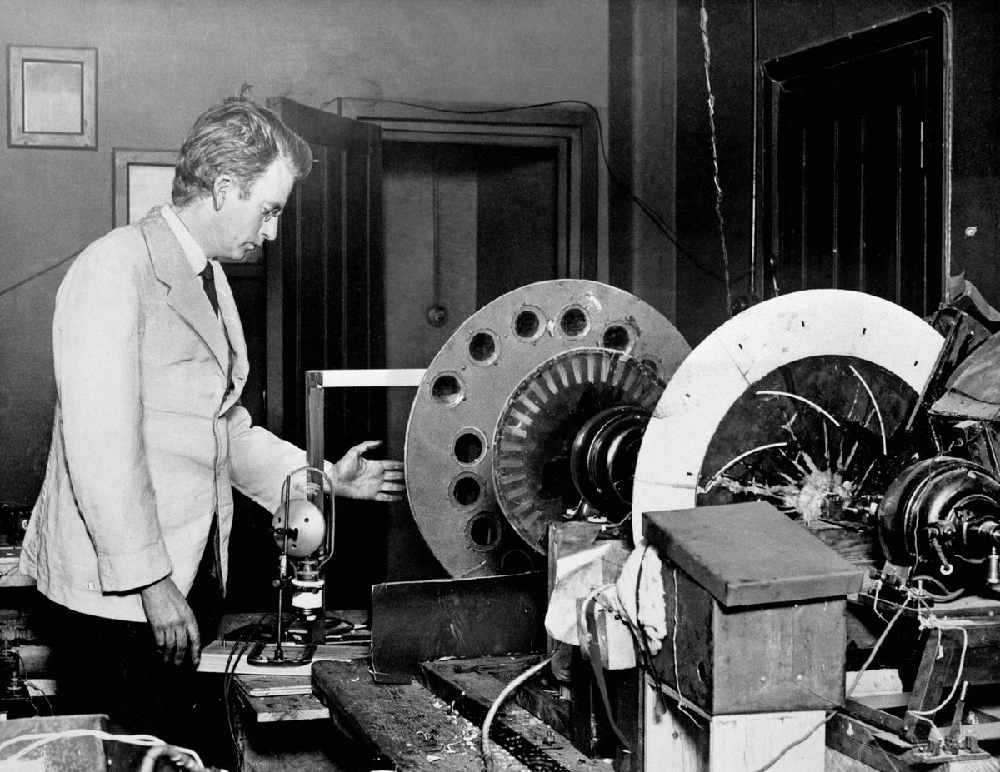
Механическое ТВ
Джон Логи Бэрд в Лондоне показывает передачу движущегося изображения с помощью вращающегося диска.
1931
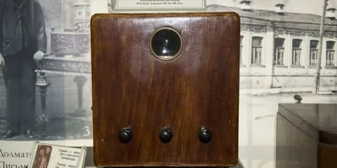
Первое ТВ в СССР
С 1 октября из Москвы (Никольская, 7) идут регулярные опытные передачи механического ТВ: 30 строк, без звука.
1936
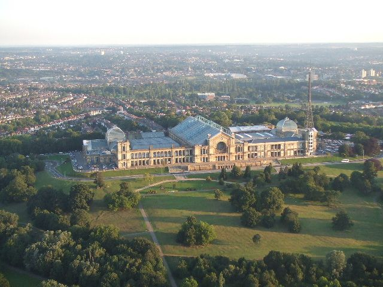
BBC
В Лондоне запускается первая регулярная служба электронного телевидения высокой чёткости.
1938–1939
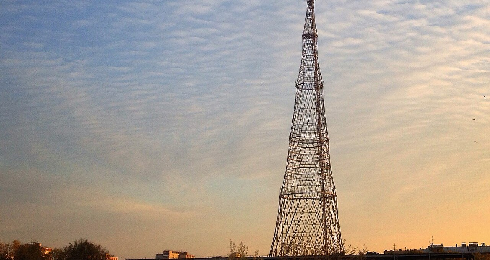
Шаболовка
Опытные передачи Московского телецентра в 1938 году, регулярное электронное вещание — с марта 1939 года.
LIVE
МУЛЬТИМЕДИА ТЕХНОЛОГИИ · ИУ3
342
·
02:05
Телевидение
ДАЛЕЕ: Телевидение и интернет-вещание
Титов Алексей Валерьевич, ИУ3-31М, tav18u926@student.bmstu.ru
СРАВНЕНИЕ
Телевидение и интернет-вещание
Эфирное ТВ · broadcast
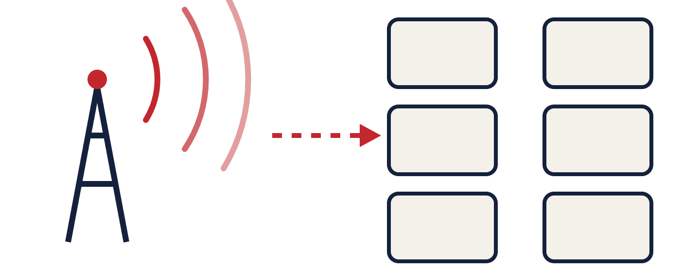
Один сигнал на всех. Цена не зависит от числа зрителей, задержка — единицы секунд, обратной связи нет.
Интернет · unicast + CDN
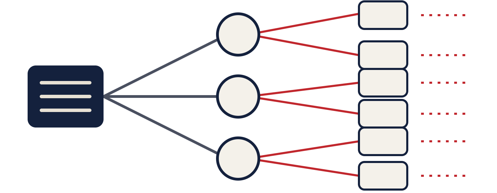
Свой поток каждому. Цена растёт с аудиторией, задержка от 0,5 до 30 с, зато есть чат, адаптивное качество и вещать может любой.
LIVE
МУЛЬТИМЕДИА ТЕХНОЛОГИИ · ИУ3
398
·
03:13
Телевидение
ДАЛЕЕ: Первая онлайн-трансляция, 1993 год
Титов Алексей Валерьевич, ИУ3-31М, tav18u926@student.bmstu.ru
ПЕРВАЯ ОНЛАЙН-ТРАНСЛЯЦИЯ
24 июня 1993 года, Пало-Альто
1993
Группа Severe Tire Damage играет на патио Xerox PARC — и концерт впервые транслируется через интернет со звуком и видео.
Сеть Mbone
Multicast Backbone — экспериментальная надстройка над интернетом: пакеты размножали маршрутизаторы, а не сервер. Концерт видели даже в Австралии.
Размер картинки в масштабе
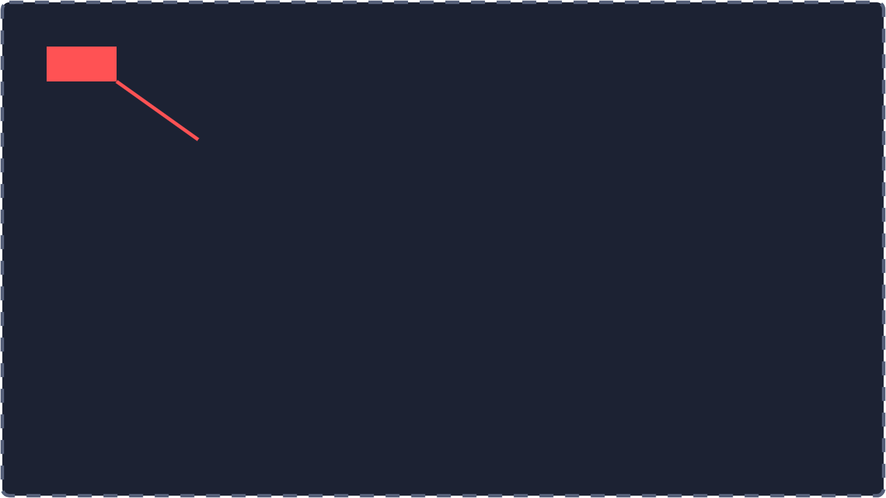
152 × 76 пикселей — 1993
примерно в 180 раз меньше по площади
1920 × 1080 — Full HD сегодня
LIVE
МУЛЬТИМЕДИА ТЕХНОЛОГИИ · ИУ3
463
·
04:14
История
ДАЛЕЕ: От экспериментов к первым сервисам
Титов Алексей Валерьевич, ИУ3-31М, tav18u926@student.bmstu.ru
1994–1997
От экспериментов к первым сервисам
1994
Rolling Stones в сети. Концерт на стадионе Cotton Bowl в Далласе транслируется через Mbone — первый крупный концерт в киберпространстве.
1995
RealAudio. Progressive Networks (позже RealNetworks) выпускает RealAudio — звук играет, не дожидаясь загрузки файла.
1995
Первый спортивный вебкаст. 5 сентября матч «Сиэтл Маринерс» — «Нью-Йорк Янкиз» звучит в интернете вживую.
1997
RealVideo. Потоковое видео становится коммерческим продуктом.
Главная проблема эпохи — канал. Скорость в масштабе:
Модем 1990-х · 56 кбит/с
почти незаметно
Поток Full HD · ~5 Мбит/с
LIVE
МУЛЬТИМЕДИА ТЕХНОЛОГИИ · ИУ3
521
·
05:28
История
ДАЛЕЕ: Эпоха Flash и широкополосного доступа
Титов Алексей Валерьевич, ИУ3-31М, tav18u926@student.bmstu.ru
2000-Е
Эпоха Flash и широкополосного доступа
2002 · RTMP
Flash + RTMP
Macromedia (позже Adobe) выпускает Flash Player 6 и сервер с протоколом RTMP. Видео играет в любом браузере с плагином Flash.
2002 · MLB.TV
Живой спорт в видео
26 августа впервые показан в прямом эфире матч MLB: «Рейнджерс» — «Янкиз». Около 30 тысяч зрителей.
2009 · HLS
Видео по HTTP
Apple представляет HLS: поток режется на короткие файлы и раздаётся обычными веб-серверами и CDN.
В те же годы в дома приходит широкополосный доступ, а видео в браузере становится привычным — почва для YouTube готова.
LIVE
МУЛЬТИМЕДИА ТЕХНОЛОГИИ · ИУ3
577
·
06:50
История
ДАЛЕЕ: Как запускался YouTube
Титов Алексей Валерьевич, ИУ3-31М, tav18u926@student.bmstu.ru
КАК ЗАПУСКАЛСЯ YOUTUBE
Три бывших сотрудника PayPal и 19 секунд видео
14.02.05
Чад Хёрли, Стив Чен и Джавед Карим регистрируют домен youtube.com
23.04.05
Первое видео — «Me at the zoo»: Карим 19 секунд рассказывает о слонах в зоопарке Сан-Диего
05.2005
Открытая бета-версия; в июле — встраивание роликов на другие сайты
12.2005
Официальный запуск: уже около 8 млн просмотров в день
10.2006
Google покупает YouTube за 1,65 млрд долларов
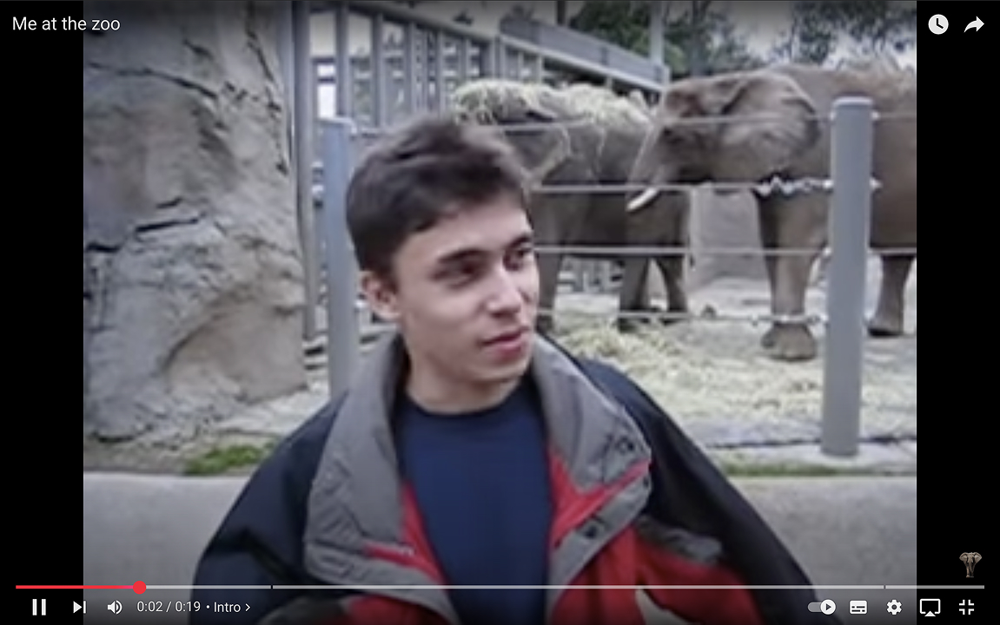
19 с
длится первый ролик «Me at the zoo»
$1,65 млрд
заплатил Google через 20 месяцев после основания
LIVE
МУЛЬТИМЕДИА ТЕХНОЛОГИИ · ИУ3
640
·
07:59
Платформы
ДАЛЕЕ: От разового шоу к открытой платформе
Титов Алексей Валерьевич, ИУ3-31М, tav18u926@student.bmstu.ru
YOUTUBE В ПРЯМОМ ЭФИРЕ
От разового шоу к открытой платформе
11.2008
Шоу YouTube Live из Сан-Франциско и Токио — задумывалось ежегодным, но осталось единственным.
04.2011
Раздел Live: 8 апреля запускаются прямые трансляции — сначала только для избранных партнёров.
2012
Олимпиада в Лондоне, а затем рекордный прыжок Феликса Баумгартнера.
2013
Для всех каналов с хорошей репутацией и более чем 1000 подписчиков.
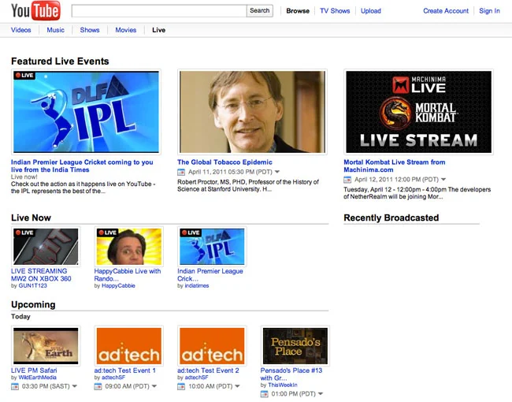
Раздел YouTube Live, апрель 2011
LIVE
МУЛЬТИМЕДИА ТЕХНОЛОГИИ · ИУ3
702
·
09:33
Платформы
ДАЛЕЕ: Justin.tv и рождение Twitch
Титов Алексей Валерьевич, ИУ3-31М, tav18u926@student.bmstu.ru
JUSTIN.TV И TWITCH
Лайфкастинг, который превратился в игровой стриминг
2007
Justin.tv
19 марта Джастин Кан начинает транслировать свою жизнь круглые сутки с камеры на кепке. Осенью сайт открывается для всех.
2011
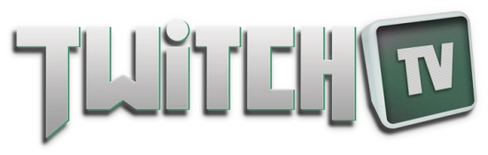
TwitchTV
Игровая категория растёт быстрее остальных и 6 июня, во время выставки E3, выделяется в отдельный сервис.
2014
Twitch Interactive
Justin.tv закрывают, компания становится Twitch Interactive и в августе переходит к Amazon.
Twitch доказал, что трансляции — это не только события, а отдельный жанр: стример, чат и сообщество в реальном времени.
LIVE
МУЛЬТИМЕДИА ТЕХНОЛОГИИ · ИУ3
768
·
10:31
Платформы
ДАЛЕЕ: Переломный момент: 8 млн зрителей
Титов Алексей Валерьевич, ИУ3-31М, tav18u926@student.bmstu.ru
ПЕРЕЛОМНЫЙ МОМЕНТ · 14 ОКТЯБРЯ 2012
Прыжок из стратосферы, который увидел весь интернет
8 млн+
одновременных зрителей трансляции Red Bull Stratos на YouTube — рекорд Книги Гиннесса.
≈ 8%
всего интернет-трафика в момент прыжка, по данным YouTube
80 каналов
ТВ в 50 странах взяли интернет-поток в эфир
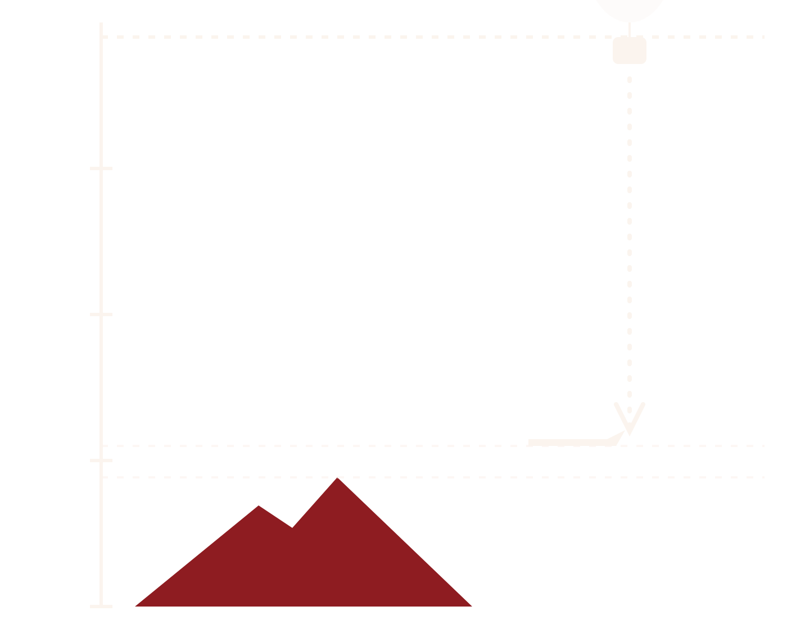
0
20
30
10
км
≈ 39 км — прыжок
Самолёт · ≈ 11 км
Эверест · 8,8 км
LIVE
МУЛЬТИМЕДИА ТЕХНОЛОГИИ · ИУ3
8 000 000+
·
11:31
Переломный момент
ДАЛЕЕ: Как устроена онлайн-трансляция
Титов Алексей Валерьевич, ИУ3-31М, tav18u926@student.bmstu.ru
ТЕХНОЛОГИЯ
Путь кадра: от камеры до экрана зрителя
1
Захват
Камера, микрофон, экран. Сырое видео — сотни Мбит/с
›
2
Кодирование
H.264, HEVC, AV1 для видео; AAC, Opus для звука
›
3
Ingest
Отправка на сервер: RTMP, SRT, WHIP
›
4
Транскодирование
Лестница качеств: 1080p, 720p, 480p…
›
5
Упаковка и CDN
HLS / DASH, сегменты CMAF, кэш у зрителя
›
6
Плеер
Буфер, декодер, выбор качества (ABR)
Задержка «glass-to-glass»
Время от объектива камеры до экрана зрителя. Складывается из всех шести звеньев; больше всего вносят сегментация и буфер плеера.
Адаптивный битрейт (ABR)
Плеер измеряет скорость сети и на лету переключается между версиями потока, чтобы видео не останавливалось.
LIVE
МУЛЬТИМЕДИА ТЕХНОЛОГИИ · ИУ3
839
·
12:57
Технология
ДАЛЕЕ: Задержка протоколов доставки
Титов Алексей Валерьевич, ИУ3-31М, tav18u926@student.bmstu.ru
ПРОТОКОЛЫ
Задержка протоколов доставки
WebRTC · WHIP/WHEP
W3C, IETF · UDP
< 0,5 с
Media over QUIC
IETF, черновик · QUIC
< 1 с
SRT
2017 · Haivision · UDP
< 1 с
RTMP
2002 · Adobe · TCP
2–5 с
LL-HLS, LL-DASH
2019–2020 · HTTP + CMAF
2–5 с
HLS, MPEG-DASH
2009 Apple, 2012 ISO · HTTP
6–30 с
0,1 с
0,5 с
1 с
2 с
5 с
10 с
30 с
Логарифмическая шкала; вертикальная черта — 1 секунда. Типичные значения, на практике зависят от длины сегментов и буфера плеера.
LIVE
МУЛЬТИМЕДИА ТЕХНОЛОГИИ · ИУ3
871
·
14:23
Технология
ДАЛЕЕ: Из чего собирают трансляции
Титов Алексей Валерьевич, ИУ3-31М, tav18u926@student.bmstu.ru
ФРЕЙМВОРКИ И ИНСТРУМЕНТЫ
Из чего собирают трансляции
Захват и кодирование
OBS Studio — открытая программа для стримеров
FFmpeg — «швейцарский нож» для кодирования и конвертации
GStreamer — конвейеры обработки медиа
Медиасерверы
nginx-rtmp, SRS, MediaMTX — открытые серверы
Wowza, Ant Media — коммерческие решения
WebRTC
Janus, mediasoup — SFU-серверы
LiveKit, Pion — современные фреймворки на Go
Плееры
hls.js, dash.js — воспроизведение в браузере
Shaka Player (Google), Video.js
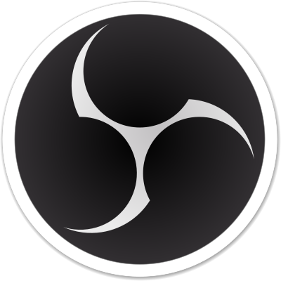
OBS Studio
FFmpeg
GStreamer
WebRTC
hls.js
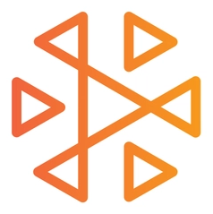
Amazon IVS
LIVE
МУЛЬТИМЕДИА ТЕХНОЛОГИИ · ИУ3
904
·
16:01
Технология
ДАЛЕЕ: Трилемма трансляции и кодеки
Титов Алексей Валерьевич, ИУ3-31М, tav18u926@student.bmstu.ru
ОСОБЕННОСТИ
Трилемма трансляции и кодеки
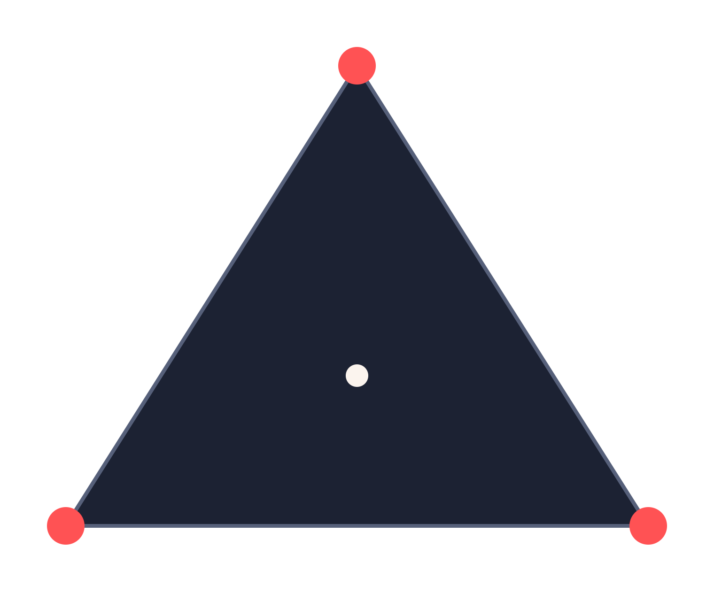
Задержка
Масштаб
Стоимость
WebRTC
HLS / DASH
MoQ — попытка
получить всё
Каждая технология выбирает две вершины из трёх: WebRTC — быстро, но дорого; HLS — массово и дёшево, но с задержкой.
Битрейт при одинаковом качестве
H.264 / AVC · 2003
100%
H.265 / HEVC · 2013
≈ 50%
AV1 · 2018 · без отчислений
≈ 35%
Оценки приблизительные: зависят от контента и настроек кодера.
LIVE
МУЛЬТИМЕДИА ТЕХНОЛОГИИ · ИУ3
936
·
17:17
Технология
ДАЛЕЕ: Куда движутся онлайн-трансляции
Титов Алексей Валерьевич, ИУ3-31М, tav18u926@student.bmstu.ru
СОВРЕМЕННЫЕ ТЕНДЕНЦИИ
Куда движутся онлайн-трансляции
Сверхнизкая задержка
LL-HLS, WebRTC и WHIP / WHEP: эфир почти в реальном времени без лишнего ПО.
Media over QUIC
Новый протокол IETF, который обещает низкую задержку и масштаб CDN одновременно.
Эффективные кодеки
AV1 на стороне зрителя и аппаратные кодеры в видеокартах и смартфонах.
Искусственный интеллект
Автосубтитры и перевод на лету, нарезка клипов, шумоподавление, модерация чата.
Мобильность и вертикаль
Эфиры со смартфона, вертикальный формат, мультистриминг на несколько платформ.
Интерактивность
Чат, донаты, опросы, совместный просмотр; спорт и концерты переходят в стриминг.
LIVE
МУЛЬТИМЕДИА ТЕХНОЛОГИИ · ИУ3
968
·
18:47
Тенденции
ДАЛЕЕ: Media over QUIC: один протокол вместо трёх
Титов Алексей Валерьевич, ИУ3-31М, tav18u926@student.bmstu.ru
ТЕНДЕНЦИЯ 2025–2026
Media over QUIC: один протокол вместо трёх
Сегодня
RTMP / SRT
приём потока
→
HLS / DASH
раздача через CDN
+
WebRTC
низкая задержка
MoQ
Издатель
→
Relay
→
Relay
→
Зрители
всё по QUIC
(HTTP/3, WebTransport)
Publish / subscribe
Издатель публикует дорожки, зрители подписываются, relay-узлы раздают поток как CDN.
< 1 секунды
Задержка как у WebRTC при масштабе HTTP-доставки.
Статус
Черновики стандарта IETF, демонстрации на выставке NAB 2026, первые внедрения.
LIVE
МУЛЬТИМЕДИА ТЕХНОЛОГИИ · ИУ3
995
·
19:56
Тенденции
ДАЛЕЕ: Тридцать с лишним лет онлайн-трансляций
Титов Алексей Валерьевич, ИУ3-31М, tav18u926@student.bmstu.ru
ИТОГИ
Тридцать с лишним лет онлайн-трансляций
1993
Severe Tire Damage в сети Mbone — первая живая трансляция
1995
RealAudio и первый спортивный вебкаст
2002
Flash и RTMP, первый матч MLB в видео
2005
Запуск YouTube и «Me at the zoo»
2011
Twitch и YouTube Live
2012
Red Bull Stratos: 8 млн зрителей одновременно
2015–20
Эфиры со смартфона, бум в пандемию
2026
Низкая задержка, AV1, ИИ, Media over QUIC
От ТВ
прямой эфир и модель «один источник — много зрителей»
Добавлено
интерактивность: чат, реакции, донаты
Главное
вещать может каждый, у кого есть камера и интернет
LIVE
МУЛЬТИМЕДИА ТЕХНОЛОГИИ · ИУ3
1 024
·
21:13
Итоги
ДАЛЕЕ: Источники
Титов Алексей Валерьевич, ИУ3-31М, tav18u926@student.bmstu.ru
ИСТОЧНИКИ
Литература и материалы
1. Savetz K. et al. MBONE: Multicasting Tomorrow’s Internet. — IDG, 1996 (гл. 6, «Musical Events»).
2. Severe Tire Damage — Livestreaming. — std.org
3. HistoryLink.org: первая интернет-трансляция матча MLB, 5 сентября 1995 г.
4. RealNetworks: история запуска RealAudio (апрель 1995 г.)
5. MLB.com: история MLB.TV (первая видеотрансляция 26.08.2002)
6. Wikipedia: Me at the zoo; YouTube Live; Justin.tv; Twitch (service)
7. Guinness World Records: Most concurrent views for a live event on YouTube (2012)
8. Knowledge at Wharton: Red Bull Stratos и доля интернет-трафика
9. Музей истории ЭВМ: «Очерки истории телевидения»; mos.ru: история Шаболовки
10. IETF: Media over QUIC (MoQ) Overview, Internet-Draft, 2026
11. RFC 8216 (HLS); ISO/IEC 23009-1 (MPEG-DASH); RFC 8825 (WebRTC)
12. Restream: The history of live streaming
LIVE
МУЛЬТИМЕДИА ТЕХНОЛОГИИ · ИУ3
1 031
·
22:18
Источники
ДАЛЕЕ: Спасибо за внимание!
Титов Алексей Валерьевич, ИУ3-31М, tav18u926@student.bmstu.ru
ЭФИР ЗАВЕРШЁН
Спасибо за внимание!
Готов ответить на вопросы
OFFLINE
МУЛЬТИМЕДИА ТЕХНОЛОГИИ · ИУ3
1 037
·
22:25
Эфир завершён
Спасибо, что были с нами! Вопросы — в чат или вслух
Титов Алексей Валерьевич, ИУ3-31М, tav18u926@student.bmstu.ru